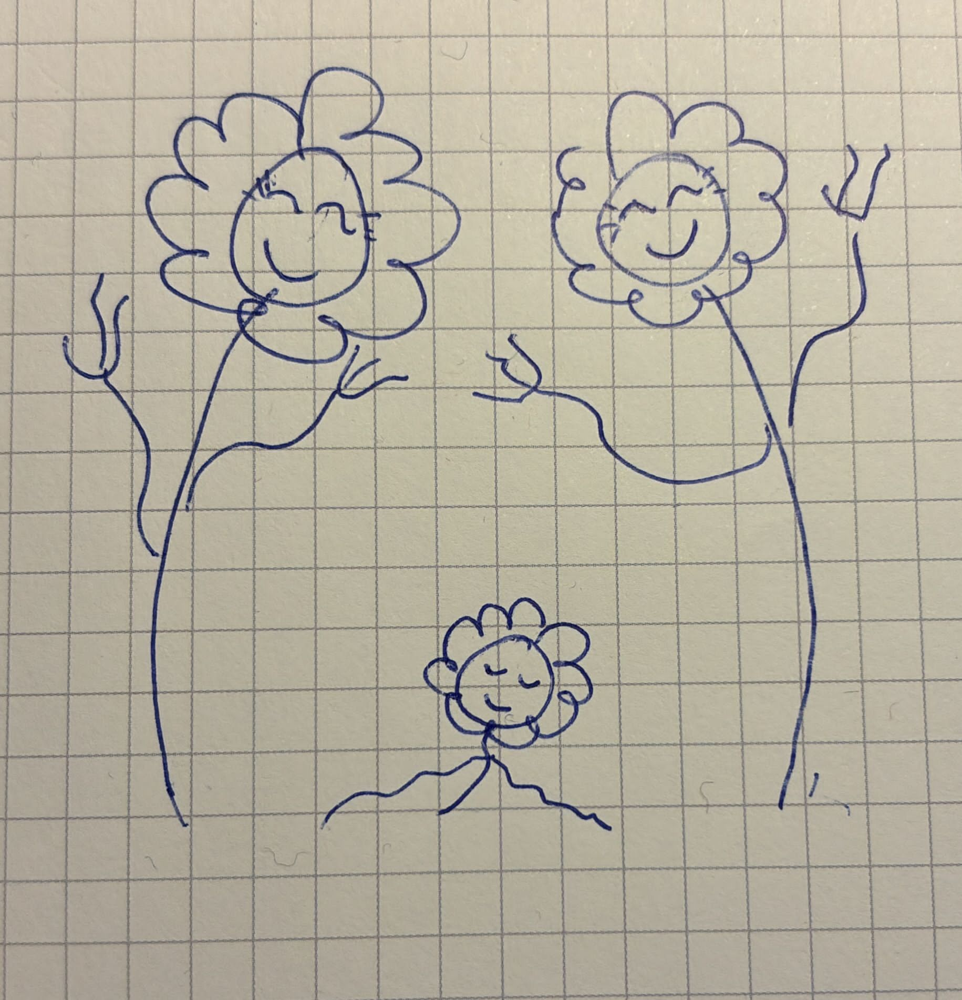

A flower will spring from a wild meadow's earth;
and dancing together in criss-crossing mirth,
bestow they will on us their joy for this birth.
Written on the 20th - 23rd of February 2024.
A spontaneous illustration made by Kari upon reading the poem:

Last updated: 14:07 (GMT+1), 23rd February 2024